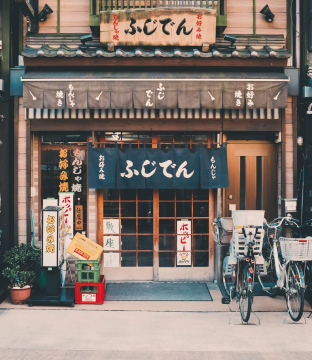

Tokyo
Arrival
Our trip began at Narita International Airport, located about 60 km from Tokyo. After landing and completing all immigration procedures, we were greeted by the Jornada Viagens team, who drove us to our hotel.
lodging
We stayed at the luxurious Hotel Okura Tokyo, located in the Toranomon district. The hotel has an incredible view of the city and offers a wide range of services, including a spa, a swimming pool, renowned restaurants, and a lounge bar. We were delighted with the attention to detail and the quality of service.

Exploring the city
We began our tour of the city with a visit to the famous Sensoji Temple, one of the oldest and most important Buddhist temples in Japan. We walked along Nakamise shopping street, where we found many shops selling typical Japanese items such as kimonos, fans, and traditional foods. Next, we visited the iconic Shibuya Crossing, one of the busiest intersections in the world, where we observed the synchrony of pedestrians crossing the street. The next day, we visited Ueno Park, home to the Tokyo National Museum, where we learned about Japanese history and culture. In the evening, we went to a typical Izakaya, a Japanese bar that serves a wide variety of dishes and drinks.
Shopping
Tokyo is famous for its department stores and shopping malls, and we couldn't miss visiting some of them. We went to the famous Ginza shopping district, where we found stores selling the world's most renowned brands. We also visited the Akihabara district, known as Tokyo's electronics and entertainment center, where we found several stores selling games, electronics, and manga.
Cuisine
One cannot talk about Japan without mentioning its cuisine. We had the opportunity to try a wide variety of typical dishes, such as sushi, sashimi, ramen, and tempura, as well as traditional sweets like mochi.
In conclusion...
Our trip to Tokyo with Jornada Viagens was an unforgettable experience. The agency's team took care of every detail, from booking the hotel to choosing the best places to visit and eat. We recommend Jornada Viagens to anyone who wants to take an incredible trip to Japan.
You may also like these posts...

Osaka
Osaka is a bustling, modern city in Japan. The city is famous for its delicious cuisine and for being an excellent starting point for exploring other nearby Japanese cities.
View details
Hiroshima
The city of Hiroshima combines remarkable history, Japanese culture, and enchanting landscapes, making it an exciting and inspiring destination. Recognized worldwide for its reconstruction and message of peace, it is home to the moving Hiroshima Peace Memorial Park, a symbol of reflection and hope.
View details
Kyoto
The ancient capital of Kyoto enchants visitors with historic temples, traditional gardens, and the most authentic essence of Japan. Among its iconic sights are the red gates of Fushimi Inari Taisha and the famous Arashiyama Bamboo Grove. Ancient culture, refined cuisine, and well-preserved streets make Kyoto a perfect destination for those seeking tradition, beauty, and tranquility.
View details